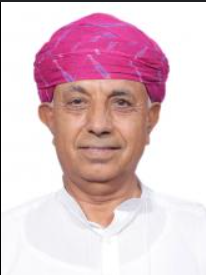

DA and FW Organisation
The DA & FW is organized into 28 Divisions and has five attached offices and twenty-one subordinate offices which are spread across the country for coordination with state level agencies and implementation of Central Sector Schemes in their respective fields. Further, one Public Sector Undertaking, nine autonomous bodies, ten national level cooperative organizations and two authorities are functioning under the administrative control of the Department.
Honourable Ministers

Shri Shivraj Singh Chouhan
Hon'ble Minister of Agriculture & Farmers Welfare

Shri Ramnath Thakur
Hon'ble Minister of State

Shri Bhagirath Choudhary
Hon'ble Minister of State
Office of Hon'ble Minister of Agriculture & Farmers Welfare
| Name |
Designation |
Phone/Email/Room No |
| Shri Ravinder Kumar |
PS to Minister |
23383370, 23782691, 23782594, 23073789
Email: -
Room No.: 119KB, Krishi Bhawan, New Delhi |
| Shri Bhupendra Singh Paraste |
Additional PS to Minister |
23383370, 23782691
Email: -
Room No.: 118, Krishi Bhawan, New Delhi |
| Shri Pawan Kumar Ojha |
Under Secretary |
23383370, 23782691
Email: -
Room No.: 140, Krishi Bhawan, New Delhi |
| Shri Avinash Kumar Arya |
1st PA to Minister |
23383370, 23782691
Email: -
Room No.: 140, Krishi Bhawan, New Delhi |
| Shri Anil Prakash Dubey |
Section Officer |
Email: -
Room No.: Krishi Bhawan, New Delhi |
| Name |
Designation |
Phone/Email/Room No |
| Shri Karmchand Choudhary |
Additional PS to Hon'ble MOS (Agri & Farmers Welfare) |
23388165, 23382756, 23782565, 23782343
Email: -
Room No.: 156, Krishi Bhawan, New Delhi |
| Ms. Neha Chaudhary |
Under Secretary (o/o MOS (Agri. & FW)) |
23388165, 23382756, 23782565, 23782343, 23074190(F)
Email: mosafwoffice@gmail.com
Room No.: 199-N, Krishi Bhawan, New Delhi |
| Shri Kishan Lal Jat |
Assistant PS to Hon'ble MOS (Agri & Farmers Welfare) |
23388165, 23382756, 23782565, 23782343
Email: kishanparliament@gmail.com
Room No.: 199-M, Krishi Bhawan, New Delhi |
| Shri Chander Kant Verma |
Section Officer (O/O MOS (Agri.&FW)) |
23388165, 23382756, 23782565, 23782343, 23074190(F)
Email: mosafwoffice@gmail.com
Room No.: 199-L, Krishi Bhawan, New Delhi |
| Shri Kamlesh Kumar Mishra |
Additional PS to Hon'ble MOS (Agri & Farmers Welfare) |
23383975, 23383976, 23383971 (F)
Email: mos-agri@nic.in
Room No.: 325, Krishi Bhawan, New Delhi |
| Shri Ashutosh Kumar |
PS to Hon'ble MOS (Agri & Farmers Welfare) |
23383975, 23383976, 23383971 (F)
Email: ashutoshkumar.irs@gov.
Room No.: 323, Krishi Bhawan, New Delhi |
WHO'S WHO
| NAME |
DESIGNATION |
EMAIL |
OFFICE |
EPABX |
ROOM NO |
| Shri Sihvraj Singh Chouhan |
Hon'ble Minister of Agriculture & Farmers Welfare |
agrimini.jindalaj@jamaildolj.com |
23383370, 23782691 |
120 |
|
| Shri Ravinder Kumar |
PS to Minister |
|
23383370, 23782691, 23782594, 23073789 |
119KB |
|
| Shri Bhupendra Singh Paraste |
Additional PS to Minister |
|
23383370, 23782691 |
118 |
|
| Shri Pawan Kumar Ojha |
Under Secretary |
|
23383370, 23782691 |
140 |
|
| Shri Avinash Kumar Arya |
1st PA to Minister |
|
23383370, 23782691 |
140 |
|
About Us - Office of the Secretary (Agriculture & Farmers Welfare)
OFFICE OF THE SECRETARY (AGRICULTURE & FARMERS WELFARE)
| NAME |
DESIGNATION |
EMAIL |
OFFICE |
EPABX |
ROOM NO |
| Shri Devesh Chaturvedi |
Secretary |
secy-agril@gov.in |
23382651, 23388444 |
4918 |
115 |
| Shri KJVN Mohan Rao |
PPS |
secy-agril@gov.in |
23382651, 23388444 |
4125 |
125 |
| Shri GYSSL Narasimham |
PPS |
secy-agril@gov.in |
23382651, 23388444 |
4954 |
125 |
| Personal Section |
|
secy-agril@gov.in |
23382651, 23388444 |
4126 |
126 |
OFFICE OF THE CHIEF EXECUTIVE OFFICER (NRAA)
| NAME |
DESIGNATION |
EMAIL |
OFFICE |
EPABX |
ROOM NO |
| Shri Faiz Ahmed Kidwai |
CEO, NRAA |
faizkidwai@nic.in |
23070306, 23070916 |
4127 |
131 |
| Shri Sanjeeb Khanna |
PPS |
sanjeeb@nic.in |
23383830, 23070257 |
4419 |
143 |
OFFICE OF PRINCIPAL ECONOMIC ADVISOR
| NAME |
DESIGNATION |
EMAIL |
OFFICE |
EPABX |
ROOM NO |
| Shri Devaji Khound |
Principal Economic Advisor (AER, MSP & CCS) |
dkhound@nic.in |
23385931, 23382719 |
4940 |
244 |
| Shri S.S. Rawat |
Senior PPS to Pr. EA |
ssrawat@nic.in |
23385931, 23382719 |
4148 |
243-A |
| Shri Anshul Kapil |
PA to Pr. EA |
anshul@nic.in |
23385931, 23382719 |
4148 |
243-A |
| Shri Arun Kumar |
Sr. Economic and Statistical Advisor |
office@nic.in |
23384036, 23382016 |
4144 |
144 |
| Ms. Meena Nagpal |
Sr. PPS |
meena@nic.in |
23384036, 23382016 |
4952 |
152-A |
| Shri Poqja Kohli |
PS. To Senior ESA |
pooqja@nic.in |
23384036, 23382016 |
4952 |
152-A |
About Us - List of Additional Secretary & Equivalent
LIST OF ADDITIONAL SECRETARY & EQUIVALENT
| NAME |
DESIGNATION |
EMAIL |
OFFICE |
EVADX |
ROOM NO |
| Shri Dengji Khoand |
Principal Economic Adviser(ASP) |
dkhoand@nic.in |
23382719, 23385931 |
4940 |
244 |
| Shri S. S. Rawat |
Senior PPS to Pr. EA |
ss.rawat@nic.in |
23382719, 23385931 |
4148 |
243-A |
| Dr. Pramod Kumar Meherda |
Additional Secretary (Farmers Welfare/Digital Agriculture/CEO) |
pkl.meherda@nic.in |
23381176 |
4297 |
131 |
| Shri N. Sankar |
PPS |
|
23381176, 23382417 |
4297 |
130 |
| Shri Manoj Khattar |
PPS |
|
23383744, 23382977(PAX) |
4130 |
142-A |
| Ms. Maninder Kaur Dwivedi |
Additional Secretary(DM-BKVY-Seeds) |
maninder.ecidud@nic.in |
23388656,2338219 |
4999 |
134 |
| Shri Anoop Singh Rawat |
PSO |
anoop.rawat@nic.in |
23388656,2338219 |
4240 |
132 |
| Ms. Leela sabu |
PPS |
|
23382219, 23388656 |
4240 |
132 |
| Shri Faiz Ahmed Kidwai |
Additional Secretary (RFS/NRM/Climatic Change/PP/Policy & Coord/Marketing) |
fajdoljkkdwai@nic.in |
23070306,23070916 |
4127 |
131 |
| Shri Sanjeeb Khanna |
PPS |
sanjeeb.khanna6@nic.in |
23383830, 23070557 |
4419 |
143 |
| Shri Sanjiv Narain Mathur |
Additional Secretary & FA |
asfa-agr@nic.in |
23381363, 23382532 |
4968 |
136 |
| Shri N.K. Sood |
Principal Staff officer |
|
2338136, 23382530 |
4135 |
135 |
| Dr. Praveen Kumar Singh |
Agriculture Commissioner |
comm-agr@apo.in |
23383549, 23381012 |
5130 |
223 |
| Shri G.M. Rao |
PS |
|
23381012, 23383549 |
4921 |
217-A |
JOINT SECRETARY & EQUIVALENT
| NAME |
DESIGNATION |
EMAIL |
OFFICE |
EVER. |
ROOM NO |
| Shri Navin Kumar Vidyarthi |
Adviser (ES&E) |
navin.vidyarthi@nick.in |
23382434 |
4987 |
446 |
| Smt. Mamta Madan |
PPS to Adviser |
mamta.madam@gmail.com |
23382434 |
4953 |
447 |
| Ms. Chandan Mishra Dwivedi |
Chief Controller of Accounts (M/o Agriculture & FW and M/o FAM&D) |
cca-agrilatgov.in |
23382440, 23384611, 23387862 |
|
|
| Shri Franklin L. Khobung |
Joint Secretary (NRMVERS) |
franklin.@cick.in |
23381757, 23388756 |
4220 |
299 C |
| Shri Rama Vishal Malhotra |
PPS to JS (RFS/NRM) |
rama.malhotra@gmail.com |
23381757, 23388756 |
4883 |
299 D |
| Smt. Rama Vishal Malhotra |
PPS |
rama.malhotra@gmail.com |
23381757, 23388756 |
4883 |
299 D |
| Smt Perin Devi |
Joint Secretary (Policy & Coordination) |
perin.dev@nick.in |
23386124,23389614 |
4555 |
189 |
| Shri V.V Nagamani |
PPS to JS (Policy & Coordination) |
v.nagamani@gmail.com |
23386124,23389614 |
4958 |
187 |
| Shri Priya Ranjan |
Joint Secretary (Horitculture) |
jsmidn-agrilat gov.in |
23389208, 23389441 |
4224 |
224 |
| Shri Ajay Sareen |
PPS |
ajay.sareen@gmail.com |
23389208, 23389441 |
4624 |
224-A |
| Shri Muktanand Agrawal |
Joint Secretary (PP/ CEO-PMER) |
muktanand@nick.in |
23382444 |
4925 |
227 |
| Shri Samuel Praveen Kumar |
Joint Secretary (Extn. & Investment& Market/Price support(I &MPSAIF)) |
sampraveen@gov.in |
23073384, 23384468 |
4928 |
133 |
| Smt. Neelam Kumar |
Senior PPS |
neelam.kumar@gmail.com |
011-23384468, 23073384 |
4632 |
137-A |
Department At A Glance
Agriculture plays a vital role in India's economy. 54.6% of the total workforce is engaged in agriculture and allied sector activities (Census 2011). Agriculture and Allied sector accounts for 18.4% of India's GVA at current prices during 2022-23. Given the importance of the agriculture sector, the Government of India has taken several steps for its development in a sustainable manner.
Department of Agriculture & Farmers Welfare (DA&FW)
The Department of Agriculture & Farmers Welfare (DA&FW) is one of the two constituent departments of the Ministry of Agriculture & Farmers Welfare. This department is headed by the Agriculture & Farmers Welfare Minister and is assisted by two Ministers of State. The Secretary (A&FW) is the administrative head of the department.
The Secretary is assisted by:
- Five Additional Secretaries (including one Financial Adviser)
- 10 Joint Secretaries
- One Agriculture Commissioner
- Horticulture Commissioner
- Senior Economic Advisor
- Horticulture Statistics Advisor
- Advisor Cost and Deputy Director General
Additionally, the Chairman of the Commission for Agriculture Costs and Prices (CACP) advises the department on pricing policies for selected agricultural crops.
Structure of DA&FW
The DA&FW is organized into:
- 28 divisions
- Five attached offices
- 21 subordinate offices spread across the country
- One Public Sector Undertaking
- Seven autonomous bodies
- Two authorities under its administrative control
Land Use Statistics (2021-22)
As per land use statistics for 2021-22:
- Geographical area of India: 328.7 million hectares
- Agricultural land: 54.8%
- Reported net sown area: 141.00 million hectares
- Gross cropped area: 219.158 million hectares
- Cropping intensity: 155.4%
The net irrigated area in 2021-22 was 77.9 million hectares, distributed as follows:
- Canal irrigation: 24.7%
- Tanks: 2.8%
- Tube wells: 47.3%
- Other wells: 13.2%
- Other sources: 12.0%
Gross Value Added of Agriculture & Allied Sector (2022-23)
As per the Provisional Estimates of National Income (2022-23), released by the National Statistical Office (NSO), the agriculture and allied sectors contributed 18.4% to India’s Gross Value Added (GVA) at current prices.
Conclusion: The agriculture sector remains the backbone of India’s economy, and its contribution to employment and GDP is immense. The government continues to implement policies to ensure sustainable agricultural growth.
Gross Value Added of Agriculture & Allied Sector (Rs. In Crore)
| ITEMS |
2017-18 |
2018-19 |
2019-20* |
2020-21* |
2021-22* |
2022-23* |
| GVA OF AGRICULTURE AND ALLIED SECTORS |
28,29,826 |
30,29,925 |
33,68,471 |
36,95,412 |
40,66,649 |
45,57,599 |
| GVA SHARE OF AGRICULTURE AND ALLIED SECTOR (%) |
18.3 |
17.6 |
18.3 |
20.3 |
19.0 |
18.4 |
Source: National Statistical Office, MoSPI
*Third Revised Estimates, *Second Revised Estimates @First Revised Estimates $Provisional Estimate as on 31st May 2023
'
History Document
HISTORY
Attached File:
Download
Publish Date: 09-01-2021
data.gov.in
national portal of India
Liaison Officer
Nodal officer details of the Department
- Nodal Officer for SC/ST - Sh. Kalu Ram Meena, Director
- Nodal Officer for OBC - Sh. Anil Jain, Deputy Secretary
- Nodal Officer for EWS - Sh. B.P. Bimal, Director
- Nodal Officer for PWD - Sh. B.P. Bimal, Director